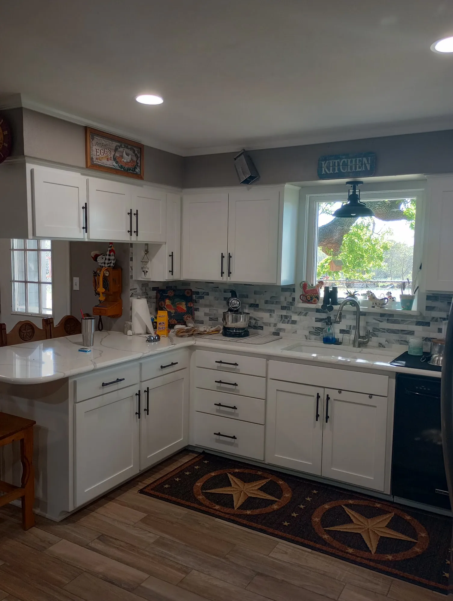

Contact · Graham, TX
Let’s talk about your room.
Call the office at (940) 456-3734, Monday to Friday, 8 AM to 6 PM Central. Or stop by 1033 4th St, Graham, TX 76450.

Call the office
(940) 456-3734Mon–Fri 8 AM–6 PM CT
Address
Hours
| Monday | 8 AM – 6 PM |
|---|---|
| Tuesday | 8 AM – 6 PM |
| Wednesday | 8 AM – 6 PM |
| Thursday | 8 AM – 6 PM |
| Friday | 8 AM – 6 PM |
| Saturday | Closed |
| Sunday | Closed |
Central Time. Google notes hours might differ on Thanksgiving and Black Friday, so call ahead around holidays.
Good to know
Questions, answered.
Where is H&T Custom Interiors located?
H&T Custom Interiors is at 1033 4th St, Graham, TX 76450.
What are H&T Custom Interiors’ hours?
Monday to Friday, 8 AM to 6 PM Central Time. Closed Saturday and Sunday. Holiday hours may differ, so call ahead around holidays.
What does H&T Custom Interiors do?
H&T is listed on Google as a cabinet maker. Customer reviews describe custom cabinets, kitchen remodels, bath remodels with custom vanities, tile showers, flooring installs, interior painting and a shop build.
How are H&T Custom Interiors’ reviews?
They are rated 5.0 out of 5 from 8 Google reviews. Customers mention reasonable pricing, clear communication, attention to detail and a clean house at the end of each day.
How do I get a quote?
Call (940) 456-3734 during business hours (Monday to Friday, 8 AM to 6 PM CT) to talk through your project.